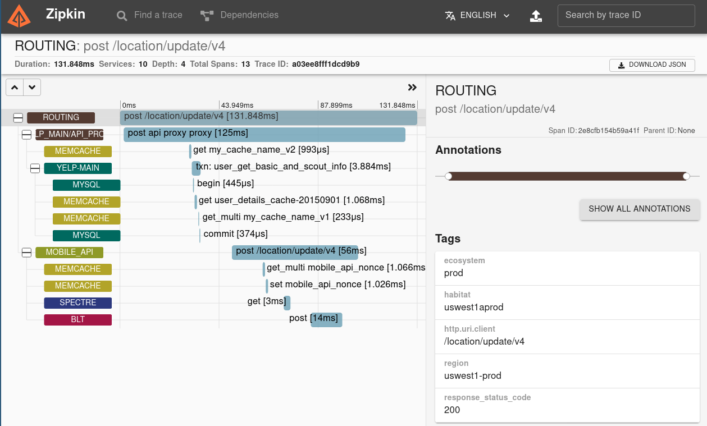

Logging, Metrics, and Tracing with Node.js
Thomas Hunter II
Adapted from Distributed Systems with Node.js:
bit.ly/34SHToF
Intro
Why does Observability Matter?
Sometimes you want specific info
Sometimes you want aggregate info
- How long does the profile update endpoint take?
- What's the failure rate of the new endpoint?
Sometimes need to associate info
- How are these myriad of services connected?
- Which service is to blame for a failure?
Logging
The console.log() of the cloud
What are logs?
- An approach for extracing data from a program
- Often well-structured JSON data instead of free text
- Logs often have associated severity levels
- Severity allows filtering, e.g. ignore
debug in prod
- Logs can write to stdout, fs, network UDP
winston is a popular npm package for logging
Winston Example
import winston from 'winston';
export default winston.createLogger({
level: 'info',
format: winston.format.json(),
defaultMeta: { env: process.env.NODE_ENV,
app: 'profile-service' },
transports: [
new winston.transports.File({
filename: '/var/log/nodeapp.log'
}),
new winston.transports.Console()
]
});
Common Logging Conventions
- Global logger, and request-specific logger
- A Request UUID can associate related logs
import Logger from '../logger.mjs';
import UUID from 'uuid';
server.addHook('onRequest', async (req) => {
const request_id = UUID.v4();
req.logger = Logger.child({ request_id });
const { url, method } = req.context.config;
req.logger.info('on_request', { url, method });
});
What does Logging look like?
- TODO: Screenshot of Kibana
- TODO: Quick query explanation
Metrics
Aggregate, numeric data
What are metrics?
- Numeric, time-series data, to understand app health
- Metrics usually have a name and sometimes tags
- Real world info that benchmarks can't tell you
- Request throughput, request timing, memory usage
- Response status codes, endpoint popularity
- Money spent, user churn, ad clicks
Example Code
import StatsD from 'statsd-client';
const statsd = new StatsD({ prefix: 'myapp.' });
server.addHook('onResponse', async (req, reply) => {
statsd.timing('request.time',
reply.getResponseTime());
statsd.increment('request.status',
reply.raw.statusCode);
statsd.increment('request.method',
req.context.config.method);
});
What do Metrics look like?
Distributed Tracing
Inter-Service Communication
What does Tracing look like?

Best Practices
When and how to use this stuff
Logs vs Metrics
- Numeric data in both can be graphed
- I like to put actionable numeric data into metrics
- Anything that triggers a page in metrics
- Logs are nice for capturing stack traces
Create Playbooks
- A playbook contains instructions for an emergency
Logging, Metrics, and Tracing with Node.js